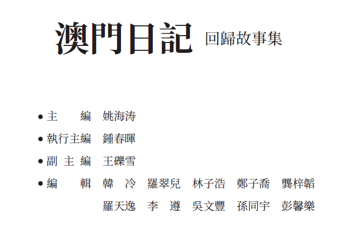

BUILD THE FLOW
先看人怎樣移動，再決定畫面。Read how people move before drawing screens.
ANSONOS / MACAO 工作桌面 WORKING DESKTOP
這不是一份向下讀完的履歷。
打開工具，看看我怎樣工作。
This is not a résumé to scroll through.
Open the tools. See how I work.
STUDENT DEVELOPER · EDITOR · SPEAKER 22.2°N / 113.5°E
ANSON LO / 羅天逸
我關心的不只是把東西做出來，而是把複雜的流程整理成其他人可以理解、使用和延續的系統。 I care not only about making things, but about turning complex work into systems other people can understand, use, and continue.
QUICK LOOK / 01
先看人怎樣移動，再決定畫面。Read how people move before drawing screens.
讓不同角色看到同一個真實狀態。Give different roles one shared state.
刪掉噪音，留下真正要被理解的事。Remove noise; keep what must be understood.
QUICK LOOK / 02
想一起做一件有秩序、也有人味的事？ Want to build something ordered and human?
ansonlotiniat@gmail.com github.com/ansonlotiniat這個介面以我實際使用的工具作為作品入口；商標及圖示屬各自權利人，並不表示任何認可關係。 This interface uses tools I actually work in as entry points. Product marks belong to their respective owners and imply no endorsement.
struct SportsDaySystem { let yearsInUse = 2 let entryPoint = "one" func surface(for moment: Moment) { switch moment { case .before: show(.registration) case .live: show(.updates) case .onSite: show(.reference) } }}struct DebateOperations { let sourceOfTruth = SharedState() func view(for role: Role) { switch role { case .team: show(.trainingAndPrep) case .tournament: show(.drawAndOperations) } sync(shared: sourceOfTruth) }}type Workstream = "software" | "modelling" | "wiki";const team = createDeliverySystem({ project: "PuiChing Macau 2026", owner: "core engineering", streams: [software, modelling, wiki],});function ship(change: Change) { connect(change.data, change.interface); explain(change.reason); publish(change);}把資料、介面與團隊工作流接成一個可以交付的系統。Connect data, interfaces, and team workflow into one deliverable system.
# Model contractInputs must be:- named- traceable- readable by the wikiOutputs must:- answer a team question- expose assumptions- survive handoff模型不是孤立的圖；它要知道資料從哪裡來，也要能被團隊解釋。A model is not an isolated plot; its inputs need provenance and its outputs need explanation.
delivery: source: team-work destination: public-understandingpipeline: - verify-content - shape-narrative - build-interface - test-handoffstatus: alignedWiki 是團隊工作的最後介面：要準確，也要讓外面的人看懂。The wiki is the final interface to the team’s work: accurate inside, legible outside.
anson@igem npm run align --stream software
✓ interface contract connected
✓ delivery path visible
anson@igem python verify_model.py
✓ assumptions exposed
✓ output ready for explanation
anson@igem npm run build:wiki
✓ verified team work → public interface
✓ 2026 workspace aligned
\documentclass{book}\usepackage{ctex}\title{澳門日記—回歸故事集}\author{多位作者}\date{2025}\begin{document} \maketitle % editorial credit \editor{羅天逸}\end{document}\documentclass{article}\title{Between Bells and Heartbeats}\author{Anson Lo}\date{2026}\begin{verse}We talk about exams, \\about the future like it’s a city \\neither of us has visited, \\but somehow we keep pointing \\in the same direction.\end{verse}EDITORIAL CREDIT / 2025
回歸故事集

POEM / SCHOOL ENGLISH POETRY COLLECTION / 2026
We talk about exams, about the future like it’s a city neither of us has visited, but somehow we keep pointing in the same direction.
節錄自校內英文詩集作品 Excerpt from a school English poetry collection
應用與工作區 APPS & WORKSPACES
沒有符合的工作區。試試「系統」、「iGEM」或「文字」。 No matching workspace. Try “systems”, “iGEM”, or “writing”.